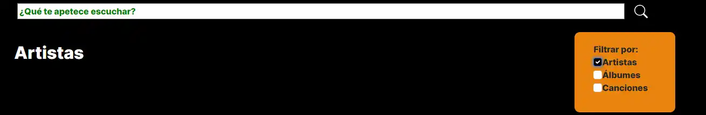
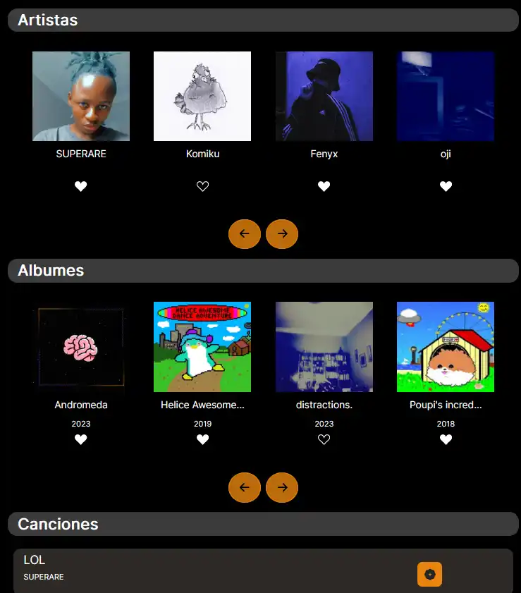

La sección de Buscador la dividiremos en 2 bloques:
Parte 1: Filtros y Novedades
En esta sección encontramos un filtro para buscar el nombre que deseemos y en la parte derecha veremos otro en el que podemos filtrar por artistas, álbumes y canciones, bastaría solo con seleccionar lo que deseamos ver o deseleccionar lo que no.
Además, encontramos la sección de novedades, donde se mostraran los artistas recién llegados o con nueva música.

Parte 2: Contenido

En esta sección veremos el contenido principal de nuestra web. Lo podemos dividir en 3 secciones: artistas, álbumes y canciones. Podemos acceder a cada uno haciendole clic